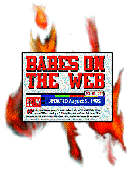
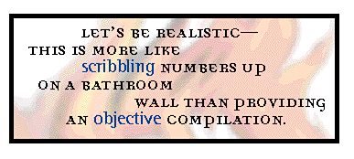

Boors on the Web
Targeting individuals on the Web is a tricky proposition. Most home pages are thrown up as hobbies, without predetermined agendas; becoming a 'net celebrity is often accidental. But the Web is a metropolis with a small-town mentality, so when a lot of hits translate into real-world recognition, a sense of disproportionate power begins to inflate even the sturdiest of skulls. When that recognition is based on a dubious endeavor from the beginning, power becomes problematic.
A perfect example is Babes on the Web, Rob Toups' lovingly crafted list of hyperlinks to attractive women on the World Wide Web. Toups rates women on their pictures and then hyperlinks their personal home pages to his own, creating a smorgasbord of e-mailing opportunities for Horny Net Geeks (HNG) who would never approach half of these women in real life. But before we look at BOTW (and just to preempt any Orwellian taunts) we'd like to clarify our resoundingly libertarian position on freedom of speech. If Toups wants to stand on the highest mount and loudly proclaim his lack of taste and tact, that's fine. We'll hand him the megaphone. Legally, he's well in the clear; we're opposed to any attempt to censor him or shut him down.
Of course, as long as Toups feels free to say and link whatever he wants, we'll feel free to call his choice of speech inconsiderate, juvenile and misguided.
 Toups has changed the tone of his home page in the last few months, which we suppose is positive. However, the substance remains the same. One of the problems with objecting to material found on the Web is that the medium is so fluid and transitory -- with no hard copies made of contents, nasty portions can be altered in a whim, resulting in a blank-slate updating of the collective memory. The arbitrary nature of his rating system, from one to four Toupsies (or, as he shouts it, TOUPSIEs), seems a little less harmless when you know that "Babe-O-Matic," designated as one Toupsie, used to be the significantly less subtle "Dog-O-Matic." Not that it's there any more -- Toups, wisely enough, has covered his ass as he has a right to do. But Toups, don't try to pretend these ratings mean nothing. You could rate the women Sneezebots to Chipperwinks and any moron this side of a GIF download would still know that four Toupsies means you approve and one you don't. Since you're rating "only from the neck up" in a two-dimensional forum, our guess is that you're not ranking their minds.
Of course, according to Toups, "placing a home page on the World Wide Web is an invitation for entry. Having a personal photo on that page is an invitation for it to be rated." This is typically known as the "she dressed so hot, she asked for it" defense. Walking past a construction site, even (and perhaps especially) if you're dressed well, is not an open invitation for catcalls. Yes, the Web is a public forum, but the word "invitation" implies a two-way street. Unless, of course, you're crashing the party, walking up to their proverbial doorstep with a few thousand hot-and-bothered friends. Even then it's nice to ring the doorbell. BOTW never informs any subject she's been hyperlinked until a flood of fan mail overloads their server. That same e-mail was characterized by one recipient as "horny and drooling" and arriving at a rate of two or three dozen per day.
Toups goes to great lengths to reiterate his disapproval of harassment and virtual stalking, assuring the reader that he "will shake his right pointer finger while sternly saying, ÎThat's a No-No!' if such an individual irritates a linked author." I don't know if Toups has noticed during his time on the Web, but most HNG wouldn't stop spanking the 'net if their arms fell off. Toups may not be actively encouraging harassment, but he's sure providing an easy forum for it. To paraphrase the police chief in Casablanca, Toups is "Shocked. Shocked!" to find out these women are harassed, then casually lights up a cigarette and rounds up the usual suspects.
Toups has had plenty of opportunities to defend his site, but the other side of the story has remained remarkably hidden. Kim Rollins, the BOTW archenemy whom Toups seems weirdly fascinated by, has been defined as the anti-Toups in numerous articles on BOTW.
Yet, Rollins says no reporter had actually spoken to her before IU.
One of the misconceptions Rollins cleared up is Toups' self-proclaimed willingness to delete links when requested. It took Rollins three exchanges of e-mail to get the link deleted. Even then it wasn't exactly philanthropic: He told her he dropped the link to her site because Rollins removed her photograph from her own page.
Unfortunately for Toups, we've read the e-mail, so this is pretty tough to deny. After all, according to BOTW, everything on the Internet, including e-mail, is fodder for his cannon.
We couldn't agree more. Anything on the Web is fair game, as is e-mail (assuming, of course, that you get it from the source). That still doesn't make BOTW a worthwhile use of bandwidth. The Supreme Court has ruled that directories are public domain, but BOTW isn't exactly a phone book.
What Toups is doing is compiling a list of women, in an order of attractiveness ascribed by him, then opening the door for a certain type of visitor. Let's be realistic -- this is more like scribbling numbers up on a bathroom wall than providing an objective compilation. Besides, bathrooms don't have phones above the toilet with a direct line to the numbers scrawled in magic marker on the stall. BOTW, with its list of hyperlinks, puts these women one click away from harassment. Then consider that this stall gets 20,000 hits a day, according to Toups. Is it any wonder some women aren't thrilled?
 Toups attempts to justify his page as satire, but he might want to check the definition of the word before offering this argument. Satire uses irony, wit and ridicule to skewer vices and follies. Unless you consider a picture of Toupsie ridiculous (which you might) and the home pages of women vices, there's nothing satirical about this. Remarkably, the general media has written almost glowing reports about BOTW, from the Houston Chronicle to Brock Meeks at CyberWire Dispatch (who claimed, completely erroneously, that "the National Organization for Women has waged an electronic war against [Toups'] site.")
"What amazes me," says Rollins, "is that everybody was falling all over themselves to excuse his behavior. I think one of the first signs you're doing something stupid is when you have to over explain why what you're doing is all right."
This might account for Toups' "30 Steps to Understanding Babes on the Web," his site's exhaustive, self-indulgent explanation of why criticism is unwarranted and why any anger indicates a problem with the critic.
So far, this deflection has worked; press reports have been resoundingly positive. Of course, this could also be because Toups, in his own words, has "managed the coverage regarding my site and focused it to the point of view I wanted." Toups must be loving this Flamethrower by now; one of his major defense mechanisms argues that "controversy, good or bad, creates publicity," and since he wants publicity, he's insulated from criticism. Well, just because he enjoys mockery doesn't make it less worthwhile. Criminals, corrupt politicians and Rasputin all got lots of press.
Toups was even confident enough to provide marketing advice for Rollins, who offered this copy of his e-mail: "This can be so much fun for both of us. Continue in your present mode and I will be the only one with a big grin. Remember, journalists do talk to each other about stories and once an image is developed about an individual, organization or product, it spreads among the community and tends to be constant in different periodicals. Notice how stories on BOTW and myself generally have an upbeat spin applied to it and no hard punches are thrown."
Well, bad karma catches up. Toups might have gotten a free ride in the press, even found himself nude in the pages of Wired, but other publications' oversights don't shift the fact that BOTW is rude at best and intrusive and offensive at worst. Even if our anger is "a product of our societal imprinting" as he claims, it's not our fault that society imprinted us with good taste and a modicum of tact. But Toups, fire back with what you've got -- if it's true that any publicity is good publicity, a response on your page would only sell more copies for us.